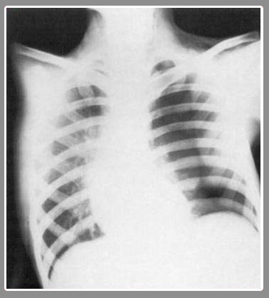
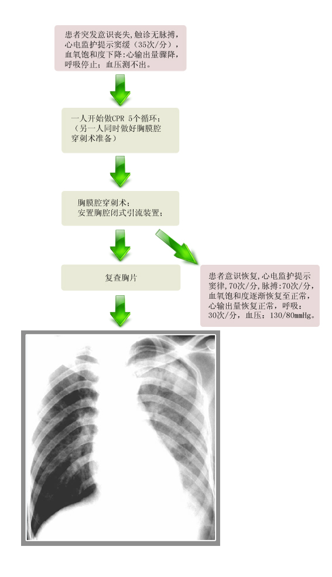

【病例摘要】
- 现病史：男性，27岁，10分钟前左上胸部被汽车撞伤，既往体健。
- 查体：血压 80/50mmHg，脉搏 148次/分，呼吸 40次/分。神清合作，痛苦状，呼吸急促，吸氧下呼吸紧迫反而加重，伴口唇青紫，颈静脉怒张不明显。气管移向右侧。左胸廓饱满，呼吸运动较右胸弱。左胸壁有骨擦音（第4，5，6肋）局部压痛明显。皮下气肿。上自颈部、胸部直至上腹部均可触及皮下气肿。左胸叩鼓，呼吸音消失，未闻及罗音，右肺呼吸者较粗，未闻及罗音。左心界叩诊不清，心律整，心率 148次/分，心音较弱，未闻及杂音。腹部平软，无压痛肌紧张，肠鸣音正常，肝脾未及，下肢无浮肿，四肢活动正常，未引出病理反射。

【辅助检查】
- 胸片:

【诊断】
- 1.张力性气胸；2.休克；3.多根肋骨骨折
【事件】
